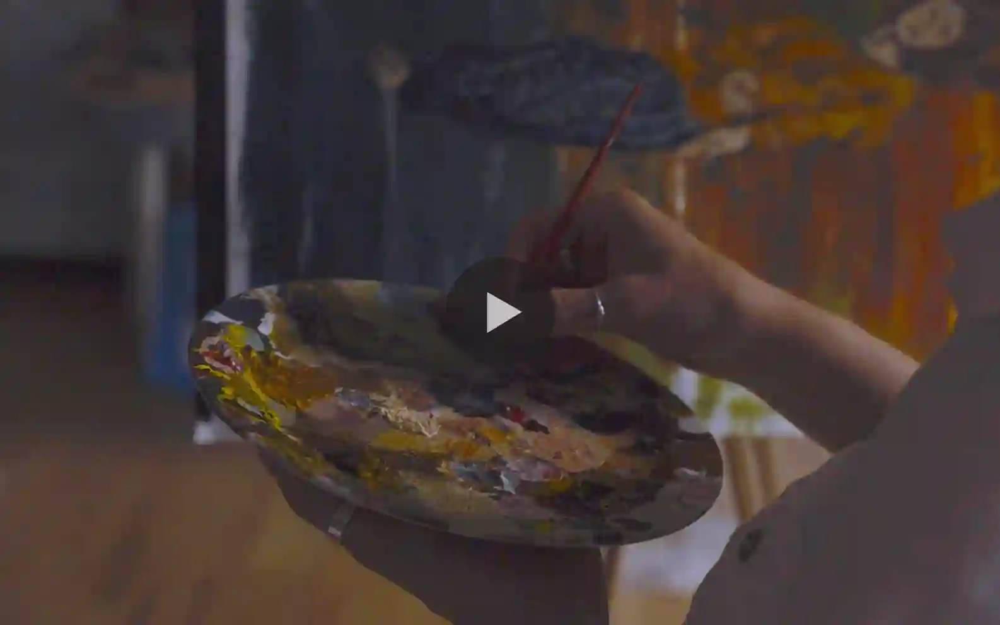
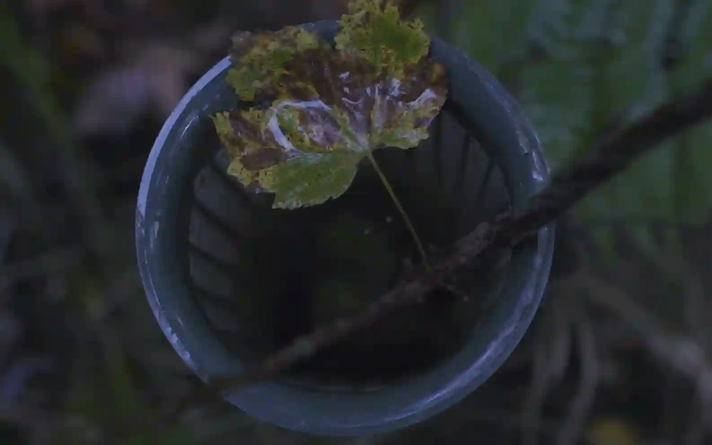

Contact
For businesses, events and storytelling projects across the Highlands and Islands of Scotland, please get in touch if you are interested in collaboration.
I collaborate with the charity to produce a series of videos that highlight the range of projects they run throughout the year. These projects span from creative workshops to conservation efforts. My role often involves working alongside the team in their sessions, while capturing the big and the small details.
I am continuing to work with Sìdh C Art on several ongoing projects. The charity operates with funding local to the Highland region.


For businesses, events and storytelling projects across the Highlands and Islands of Scotland, please get in touch if you are interested in collaboration.